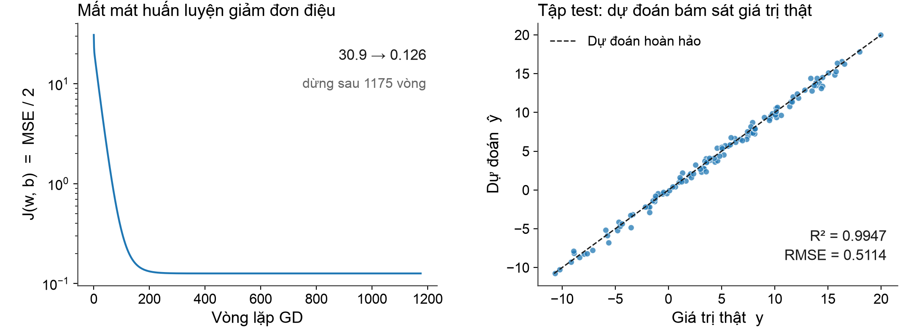
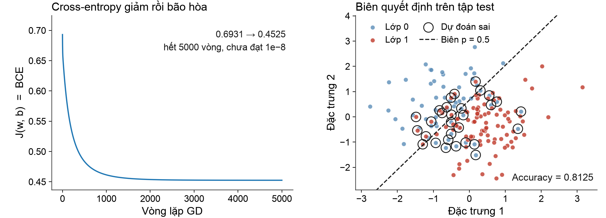
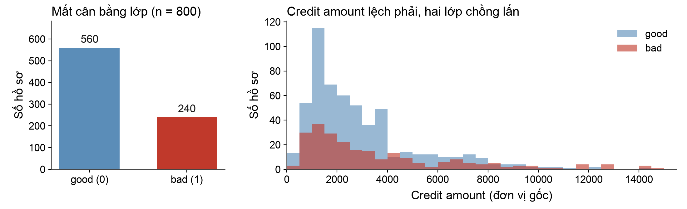
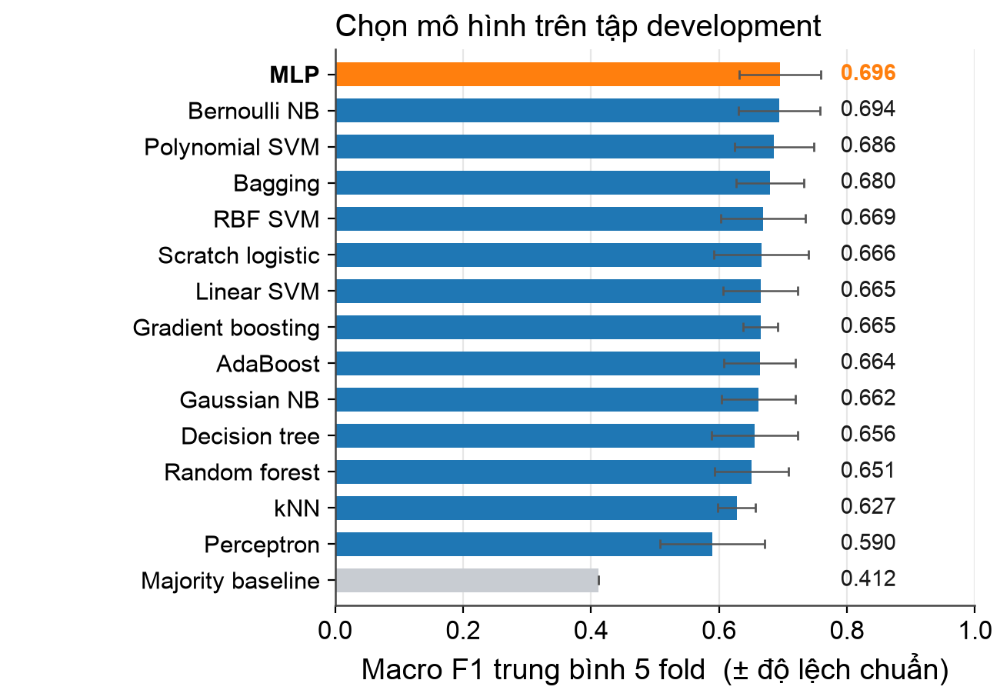
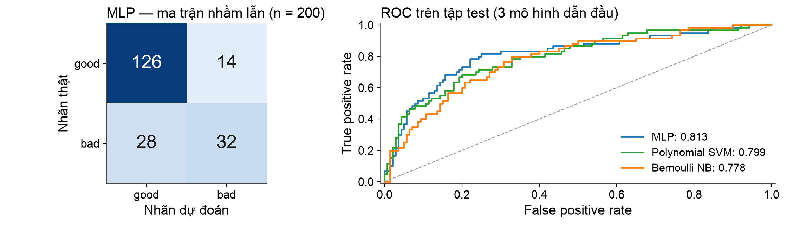
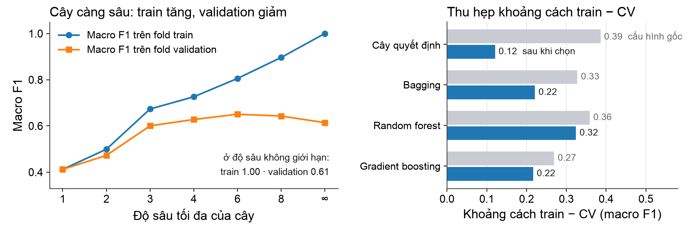

BÁO CÁO GIỮA KỲ · INTRODUCTION TO MACHINE LEARNING
Hồi quy & Phân loại
Từ Gradient Descent tự cài đặt đến so sánh 14 bộ phân loại trên OpenML
Giảng viên hướng dẫn
Lê Anh Cường, Ph.D.
Sinh viên thực hiện
Ngô Lâm Tiến — 524H0195
Nguyễn Công Thành — 524H0191
Nguyễn Lê Nhật Tâm — 524H0186
Tháng 10 năm 2026
2 / 14
NỘI DUNG
Ba phần, ba người trình bày
01
Câu 1 · Gradient Descent tự cài đặt
Hồi quy tuyến tính và logistic: mô hình, mất mát, dẫn xuất gradient, kết quả
Ngô Lâm Tiến
02
Câu 2 · Phân loại trên OpenML credit-g
Tiền xử lý, quy trình chống rò rỉ dữ liệu, 14 mô hình và baseline
Nguyễn Công Thành
03
Overfitting và cách khắc phục
Bằng chứng thực nghiệm, các biện pháp, kết luận và hạn chế của bài làm
Nguyễn Lê Nhật Tâm
Câu hỏi xuyên suốt: mô hình học được gì từ dữ liệu, và làm sao biết nó thật sự tổng quát hóa?
3 / 14
CÂU 1 · HỒI QUY TUYẾN TÍNH
Mô hình và hàm mất mát
Dự đoán
ŷi = wTxi + b
một đặc trưng → đường thẳng · nhiều đặc trưng → siêu phẳng
Mất mát: trung bình bình phương sai số
J(w, b) = (1/2n) · Σi (ŷi − yi)2
–Đầu ra là số thực — bài toán hồi quy, không phải phân loại.
–Hệ số ½ chỉ để đạo hàm gọn; nghiệm tối ưu không đổi.
–Bình phương khiến sai số lớn bị phạt nặng.
–Chia cho n để mất mát là trung bình, so sánh được giữa các cỡ mẫu.
Dữ liệu tổng hợp: 600 mẫu, 3 đặc trưng độc lập đều trên [−3, 3]; y = 4 + 3x1 − 2x2 + 1.5x3 + ε, ε ~ N(0, 0.52).
4 / 14
CÂU 1 · HỒI QUY TUYẾN TÍNH
Dẫn xuất gradient và vòng lặp Gradient Descent
Đạo hàm riêng
đặt ei = ŷi − yi ⇒ ∂ei / ∂wj = xij
∂J/∂wj = (1/n) Σi eixij ∂J/∂b = (1/n) Σi ei
∇wJ = (1/n) XT(ŷ − y)
Cập nhật đồng thời
w(t+1) = w(t) − η · (1/n) XTe(t)
–Khởi tạo w = 0, b = 0; tốc độ học η = 0.3
–Dừng khi chuẩn gradient ≤ 10−8 — chỉ dùng dữ liệu huấn luyện
–Hội tụ sau 1175 vòng trên 480 mẫu train
–Gradient được kiểm chứng bằng sai phân trung tâm, dung sai 10−6
Cả hai gradient được tính trước khi cập nhật tham số (full-batch). Không bao giờ dùng chỉ số test để quyết định dừng.
5 / 14
CÂU 1 · HỒI QUY LOGISTIC
Xác suất, cross-entropy và gradient
Mô hình xác suất
z = wTx + b ⇒ p = σ(z) = 1 / (1 + e−z)
log (p / (1 − p)) = wTx + b → biên quyết định tuyến tính
Mất mát: cross-entropy nhị phân
J = −(1/n) Σi [ yi log pi + (1 − yi) log (1 − pi) ]
σ′(z) = σ(z)(1 − σ(z))
⇒ ∂ℓ/∂z = p − y
∇wJ = (1/n) XT(p − y)
Cập nhật
w(t+1) = w(t) − η·(1/n)XT(p − y)
–Mẫu số p(1 − p) triệt tiêu, nên gradient giống hồi quy tuyến tính nhưng thay ŷ bằng p.
–η = 0.5, tối đa 5000 vòng — dừng theo ngân sách, chuẩn gradient cuối ≈ 1.55 × 10−4.
–Sigmoid và logaddexp dạng ổn định số học; ngưỡng cố định 0.5, ROC-AUC dùng xác suất.
6 / 14
CÂU 1 · KẾT QUẢ
Hồi quy tuyến tính: học đúng quan hệ sinh dữ liệu

2.99 · −2.01 · 1.49
Trọng số học được (thật: 3 · −2 · 1.5)
7 / 14
CÂU 1 · KẾT QUẢ
Hồi quy logistic: biên hợp lý, nhưng còn 30 ca sai

0.8125
Accuracy trên tập test
0.8515
F1 của lớp dương (p ≥ 0.5)
44/18/12/86
Ma trận nhầm lẫn (TN/FP/FN/TP)
8 / 14
CÂU 2 · DỮ LIỆU
OpenML credit-g: 1000 hồ sơ, 20 biến, lệch lớp

ID 31 · v1
Nguồn gốc, MD5 đã kiểm tra
0 · 0 · 0
Ô thiếu · dòng trùng · giá trị lạ
800 / 200
Development / test, phân tầng, seed 42
61
Đặc trưng sau min–max và one-hot
9 / 14
CÂU 2 · QUY TRÌNH
Chống rò rỉ dữ liệu bằng thiết kế, không bằng lời hứa
01
Chia tập trước
800 development / 200 test, phân tầng, seed 42
→
02
Chuẩn hóa trong từng fold
min–max + one-hot, chỉ fit trên train của fold
→
03
5-fold stratified CV
cùng chỉ số fold cho mọi ứng viên, chọn theo macro F1
→
04
Test đúng một lần
refit trên 800 hồ sơ rồi mới dự đoán 200 hồ sơ
–Toàn bộ lựa chọn hoàn tất trước khi sinh bất kỳ dự đoán test nào.
–Mọi mô hình dùng chung một phép biến đổi, nên so sánh giữa chúng là công bằng.
–Giữ nguyên ngoại lai hợp lệ — cờ IQR chỉ là mô tả, không phải bằng chứng dữ liệu sai.
–Baseline đa số đạt macro F1 0.412 trên test, dùng làm mốc tham chiếu.
10 / 14
CÂU 2 · CHỌN MÔ HÌNH
14 mô hình và một baseline, chọn bằng cross-validation

–Ba kernel SVM là ba biến thể của một họ, không phải ba họ độc lập.
–Dẫn đầu: MLP 0.696 · Bernoulli NB 0.694
–Chênh lệch top 2 nhỏ hơn độ lệch chuẩn giữa các fold (±0.06) ⇒ chưa thể nói hơn kém.
–kNN chọn k = 1 dù khoảng cách train–CV lớn: giữ đúng tiêu chí đã khai báo.
Điểm CV dùng để chọn tham số nên không phải đánh giá độc lập; tập test giữ vai trò đó.
11 / 14
CÂU 2 · KẾT QUẢ TEST
Trên 200 hồ sơ chưa từng thấy, khoảng cách rất hẹp
| Mô hình | Accuracy | Macro F1 | AUC |
| Majority baseline | 0.700 | 0.412 | 0.500 |
| Perceptron | 0.700 | 0.639 | 0.720 |
| kNN (k = 1) | 0.720 | 0.667 | 0.667 |
| Decision tree | 0.645 | 0.606 | 0.692 |
| Scratch logistic | 0.780 | 0.730 | 0.801 |
| Polynomial SVM | 0.775 | 0.713 | 0.799 |
| AdaBoost | 0.785 | 0.726 | 0.790 |
| MLP (được chọn) | 0.790 | 0.730 | 0.813 |
Chênh lệch giữa các mô hình dẫn đầu chỉ vài phần nghìn — nhỏ hơn dao động giữa các fold (±0.064), nên không đọc thành xếp hạng.
–MLP 0.7305 ≈ hồi quy logistic tự cài đặt 0.7301 — mô hình phức tạp không tạo khác biệt rõ.
–Accuracy cao 0.79 nhưng phải đọc kèm chỉ số theo lớp, vì lớp bad chỉ chiếm 30%.
–16 mô hình đều vượt baseline, kể cả cây quyết định có accuracy thấp hơn.
12 / 14
CÂU 2 · ĐỌC KẾT QUẢ
Một con số accuracy đẹp có thể che mất lỗi quan trọng

158/200 dự đoán đúng, nhưng bỏ sót 28/60 hồ sơ “bad” → recall lớp bad chỉ 0.533.
–Gaussian NB có recall bad cao nhất 0.650, nhưng precision chỉ 0.513: bắt được nhiều hơn, báo nhầm cũng nhiều hơn.
–Đánh đổi này là quyết định nghiệp vụ, không phải lỗi kỹ thuật — và nhóm không hạ ngưỡng sau khi đã xem test.
13 / 14
OVERFITTING
Bằng chứng: cây càng sâu, khoảng cách càng lớn

0.386 → 0.121
Khoảng cách train − CV của cây quyết định sau khi giới hạn độ sâu 6 và tối thiểu 5 mẫu/lá.
1.00 / 0.614
Cây không giới hạn: hoàn hảo trên train nhưng validation thấp hơn cây bị giới hạn.
0.324
Random forest vẫn còn khoảng cách lớn — ensemble không tự chữa được overfitting.
Biện pháp chung: giới hạn độ phức tạp · chọn tham số bằng validation · giữ tập test riêng · báo cáo cả điểm train và validation.
14 / 14
KẾT LUẬN
Điều nhóm làm được, điều còn hạn chế
Kết quả chính
–Câu 1: hai mô hình tự cài đặt, gradient khớp sai phân trung tâm, RMSE xấp xỉ nhiễu sinh dữ liệu.
–Câu 2: 14 mô hình trên cùng bộ fold; MLP được chọn với macro F1 test 0.7305.
–Chi phí của accuracy: bỏ sót 28/60 hồ sơ xấu dù accuracy 0.79.
Bài học
–Tách test trước và chuẩn hóa trong fold là điều kiện của một so sánh đáng tin.
–Chênh lệch nhỏ hơn dao động giữa các fold thì chưa kết luận được hơn kém.
–Overfitting đo được bằng khoảng cách train − validation, và giảm được bằng giới hạn độ phức tạp.
Hạn chế
–Một bộ dữ liệu, một lần chia test, lưới tham số nhỏ.
–Hồi quy logistic chạm 5000 vòng, MLP chạm 500 epoch: chưa hội tụ.
–Không có kiểm định thống kê hay lặp lại với nhiều seed.
Cảm ơn thầy và các bạn đã lắng nghe — nhóm sẵn sàng nhận câu hỏi.